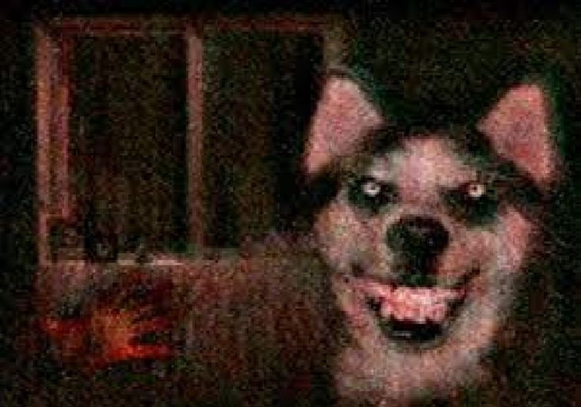
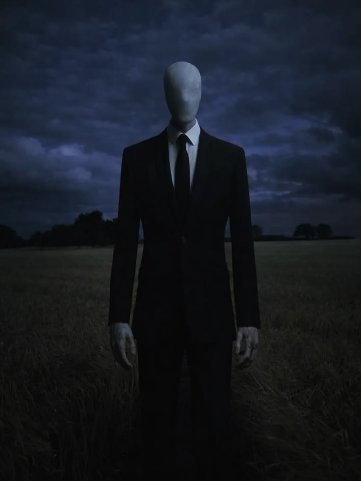
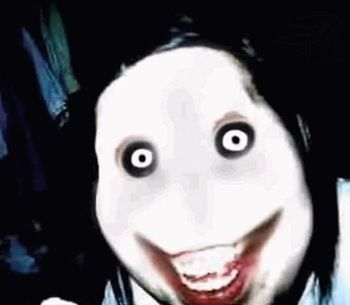
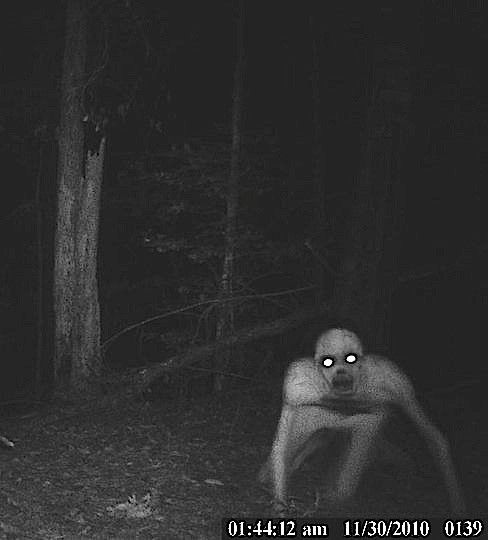

PRINCIPAISCREEPYPASTAS
Smile Dog
Uma imagem aparentemente inocente de um cachorro esconde uma das lendas mais perturbadoras da internet...

Slender Man
ma figura alta e sem rosto que aparece em lugares isolados, observando suas vítimas de longe...

Jeff the Killer
Um dos personagens mais conhecidos das creepypastas. Seu rosto deformado e seu sorriso assustador acompanham histórias de perseguições durante a madrugada...

The Rake
Uma criatura humanoide de aparência incomum que costuma ser vista durante a noite...
